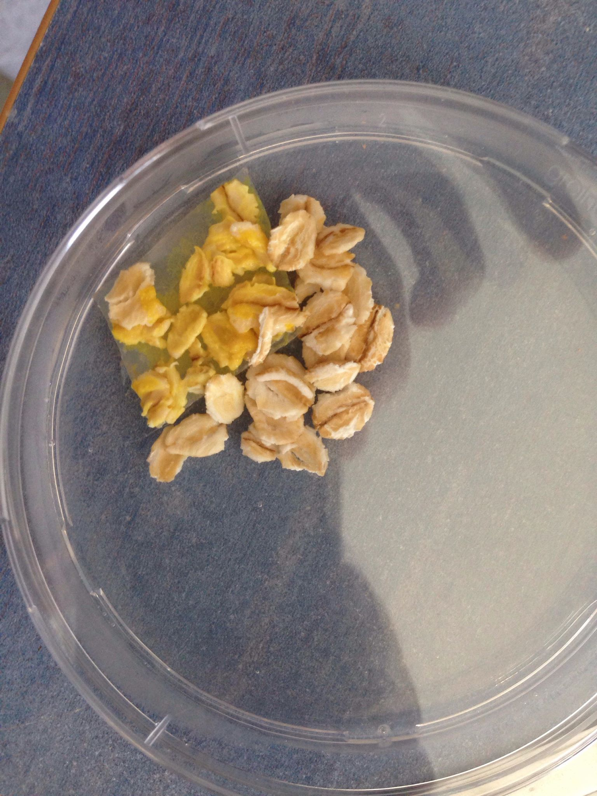
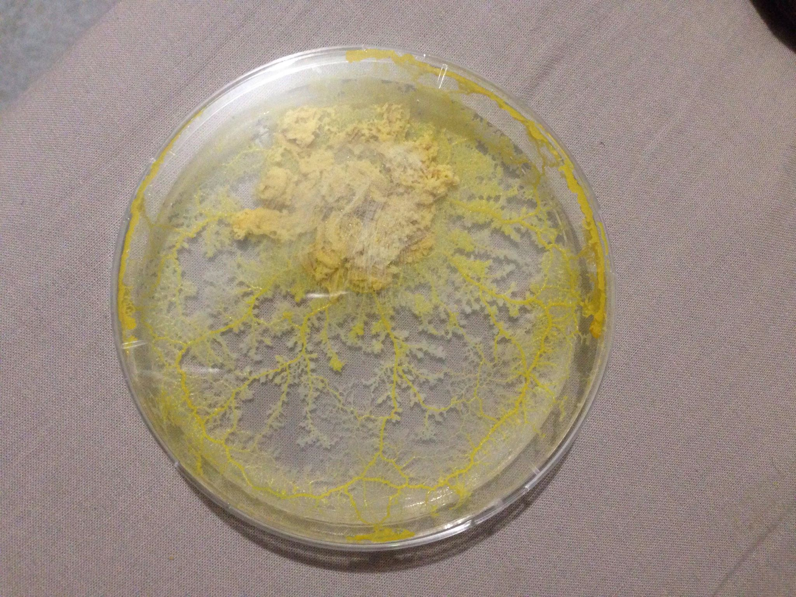
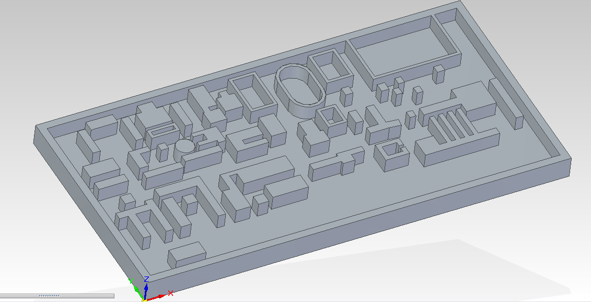
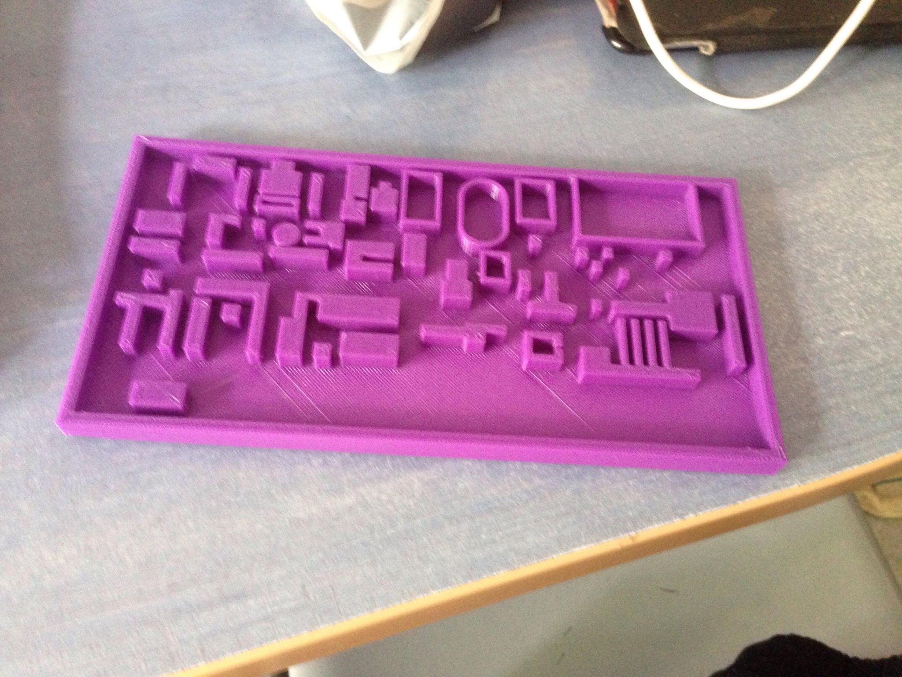
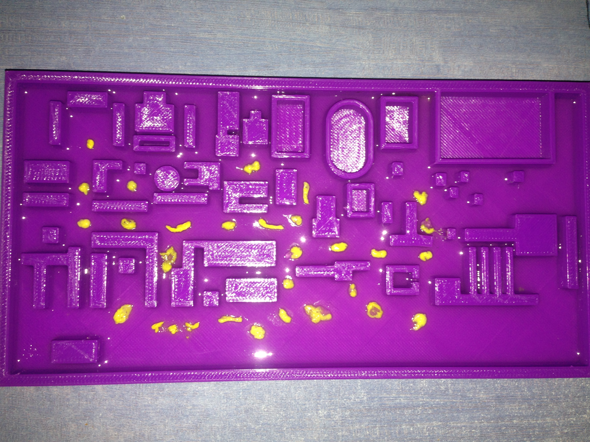

Mise en culture du blob
Bien sûr, l'expérimentation sur Physarum polycephalum nécessite d'en posséder un spécimen. Suivant les conseils d'Audrey Dussutour, et avec le soutien financier du département Biosciences de l'INSA, nous avons pu commander un kit de culture de l'espèce. Celui-ci contenait :
•Une boîte de Petri contenant trois sclérotes (forme de conservation) du blob;
•Deux boîtes de Petri contenant des flocons d'avoine;
•Une bouteille de 200 ml de gélose préparée;
•Des petits cercles de papier filtre stérile.
La mise en culture du blob se fait très simplement puisqu'elle nécessite très peu de matériel et peut être réalisée à la maison sans difficultés. C'est pourquoi nous avons décidé d'en confier la responsabilité à l'un des membres du groupe.
Il suffit pour "réveiller" un sclérote de le déposer sur un fond de gélose dans une boîte de Petri, à proximité de quelques flocons d'avoine légèrement humidifiés. Sa conservation se fait de préférence à l'obscurité car le blob craint la lumière.


Doublant de taille chaque jour, il a fallu veiller à s'occuper régulièrement du nouveau venu en le nourrissant presque quotidiennement et en lui évitant d'atteindre une taille trop importante. Il n'est pas compliqué de limiter sa taille puisqu'un fragment de la cellule cicatrise en deux minutes et donne un clone de celle d'où il provient, cette dernière pouvant être simplement jetée à la poubelle.
Choix de la maquette
Pour réaliser notre maquette du campus nous avions originalement deux idées:
• Réaliser une maquette 3D du campus à l'aide d'une imprimante 3D
• Utiliser une plaque de gélose toute simple en y insérant des obstacles
Au cours de l'année une nouvelle idée nous est venue pour réaliser notre maquette : utiliser des legos afin de d'avoir aussi un rendu en 3D et plus simple de conception. Malheureusement cette idée n'a pas pu aboutir faute de ressources. Nous avons donc décidé de revenir sur l'une de nos idées de départ: construire notre support à l'aide d'une imprimante 3D.
A l'aide du logiciel Solid Edge, nous avons donc conçu une maquette en format .stl que les professeurs de conception du Premier Cycle ont généreusement accepté de nous laisser imprimer dans leurs laboratoires. C'est à partir de cette maquette, de 20cm de longueur sur 13 cm de largeur pour une hauteur de 1,5cm que nous réaliserons nos expériences.


Expérience
Selon les différents articles que nous avons lus, le blob est capable d'optimiser ses réseaux en prenant en compte les obstacle, certains paramètres d'environnements ainsi que des paramètres qui lui sont internes et qui sont pour certains encore inconnus du monde scientifique.
Ainsi nous avons tout d'abord rempli le fond de notre maquette de gélose, puis réparti des fragments de blob sur le milieu. Nous avons ensuite attendu que les fragments s'étendent, fusionnent et occupent l'espace pour déposer à divers endroits de la maquette des flocons d'avoines, qui constituent des points à relier. La taille de la maquette rendant difficile l'accès aux entrées de tous les bâtiments, nous avons jugé plus optimal dans le cadre du projet de répartir un petit nombre de sources de nourritures à certains points stratégiques du campus :
•A proximité du département Biosciences et du restaurant de l'INSA;
•Sur la pelouse des humanités
•A proximité des terrains de sport (football, rugby etc.);
•A proximité de la direction de l'INSA;
•Sur la pelouse entre les résidences F, E et I.
La première tentative ayant échoué car le manque de gélose a entraîné l'évaporation de l'eau qu'elle contenait, il a fallu essayer une seconde fois. L'expérience étant actuellement en cours, les résultats ne sont pas encore disponibles.
Ci-dessous la première phase de l'expérience : l'extension du blob dans l'environnement.
